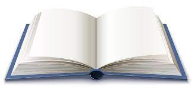

En este articulo, vera informacion sobre el formato APA para realizar
citas y fichas bibliograficas. Haga click aqui para ver el articulo
(del sitio oficial de APA).

Ficha APA para Libros
Se le redireccionara a una nueva pagina, en donde tendra un programa que
le ayudar a crear una ficha APA sobre una bibliografia de un libro. Haga click
aqui para acceder a este generador.
Ficha APA para Web
Se le redireccionara a una nueva pagina, en donde tendra un programa
que lo va a ayudar a crear una ficha APA sobre un articulo encontrado en
una pagina Web. Haga click aqui para acceder
a este generador.